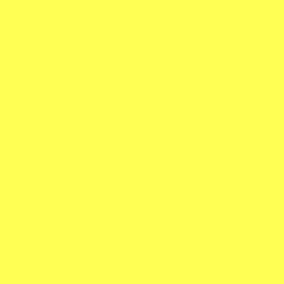

PROJECT 07
Yellow Study
Creative Coding I · 2026
An early canvas experiment: a solid yellow field created with a simple background instruction.
Interaction
A static color study; no mouse or keyboard input is required.
Run the sketch in a new tab to interact with the original artwork.
- MEDIUM
- JavaScript / p5.js
- YEAR
- 2026
- TECHNIQUES
- Color / First Experiment
- ORIGINAL TITLE
- demo.yellow.sketch